A) Préparer les mesures
1. Triggers
- Si l’étude nécessite des marqueurs temporels ou triggers, pour annoter des événements dans les signaux physiologiques, il est nécessaire de préparer la gestion de ces triggers.
- Pour cela, il faut :
- Établir la communication entre la tâche expérimentale (par exemple sur
OpenSesame) et le logiciel d’acquisition de données physiologiques (AcqKnowledgepour les mesures effectuées avecBiopac).
- Implémenter l’envoi des triggers dans
OpenSesame.
- Le tout est très simple si des scripts de synchronisation sont déjà disponibles dans votre équipe, demandez-en la documentation et vérifiez leur compatibilité avant adaptation.
- Établir la communication entre la tâche expérimentale (par exemple sur
Python pour AcqKnowledge
- Sur
AcqKnowledge(en tous cas, dans sa version 6), les touchesF1àF9peuvent servir de marqueurs temporels (triggers):- À chaque pression, un marqueur nommé apparaît sous les courbes.
- L’événement est enregistré dans le journal avec la date et l’heure exactes.
- Les touches peuvent être utilisées autant de fois que nécessaire.
- On peut n’utiliser qu’une seule touche (e.g.
F1) lorsqu’il y a beaucoup d’événements à marquer.
- Utiliser plusieurs touches est utile pour différencier des types d’événements.
- On peut n’utiliser qu’une seule touche (e.g.
- Dans tous les cas, l’horodatage est conservé et reste accessible dans le journal/les exports.
- Pour déclencher automatiquement l’appui de ces touches aux moments précis de l’expérience, on peut utiliser ce script Python (à adapter et valider dans votre environnement) appelé
keyboard_trigger_server.pydans ce tutoriel.# Librairies from flask import Flask, request, jsonify import pynput from pynput.keyboard import Key import threading import time import logging # Configuration du logging (console) logging.basicConfig(level=logging.INFO) logger = logging.getLogger(__name__) # Application Flask app = Flask(__name__) # Dictionnaire des touches utilisables par AcqKnowledge AVAILABLE_KEYS = { 'F1': Key.f1, 'F2': Key.f2, 'F3': Key.f3, 'F4': Key.f4, 'F5': Key.f5, 'F6': Key.f6, 'F7': Key.f7, 'F8': Key.f8, 'F9': Key.f9 } # Contrôleur clavier système (presse les touches) keyboard_controller = pynput.keyboard.Controller() # Fonction utilitaire de pression des touches def press_key(key_name, duration=0.1): key = AVAILABLE_KEYS[key_name] keyboard_controller.press(key) logger.info(f"{key_name} pressed") time.sleep(duration) keyboard_controller.release(key) logger.info(f"{key_name} released") return True # Lance l'appui et renvoi le statut en JSON @app.route('/press/<key_name>', methods=['GET']) def press_key_get(key_name): key_name = key_name.upper() # Vérification de la touche pressée if key_name not in AVAILABLE_KEYS: return jsonify({ 'success': False, 'error': f'{key_name} unsupported', 'supported_keys': list(AVAILABLE_KEYS.keys()) }), 400 # Appui sur la touche et réponse JSON press_key(key_name) return jsonify({ 'success': True, 'key': key_name, 'message': f'{key_name} pressed', 'timestamp': time.time() }) # Lancement du serveur if __name__ == '__main__': app.run( host='0.0.0.0', port=5000, debug=True, threaded=True )
OpenSesame
- Il faut ensuite créer de quoi lancer les triggers à certains moment sur
OpenSesame.
- On commence par ajouter un
inline_scriptdans lequel on crée une fonction permettant l’envoi (et même le test) des triggers.- Drag & Drop
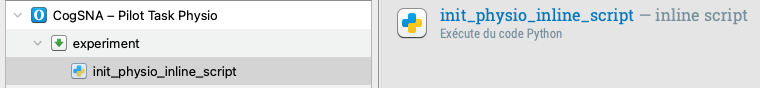
- Code
# Librairies import requests # Informations de connexion au serveur IP_SERVER = "127.0.0.1" # A remplacer par la valeur IP de l'oridnateur sur lequel tourne le serveur keyboard_trigger_server.py (via le terminal) PORT = 5000 # Fonction d'envoi des triggers def send_triggers(key): # Adresse de connexion au serveur de keyboard_trigger_server.py url = f"http://{IP_SERVER}:{PORT}/press/{key}" try: # Essaie de presser la touche choisie response = requests.get(url, timeout = 5) if response.status_code == 200: # Réussite print("Touche appuyée") # Si on souhaite utiliser F9 pour tester que tout fonctionne if key == "F9": print("Si le trigger F9 s'affiche sur les graphiques, alors la connexion avec AcqKnowledge (Biopac) est établie.") return True else: # Échec print("Un problème est survenu") return False # Échech de connexion au serveur except requests.exceptions.RequestException as e: print(f"Erreur de connexion: {e}") return False
- Drag & Drop
- Si on souhaite tester le fonctionnement des triggers, on utilise un deuxième
inline_scriptjuste après.- Drag & Drop
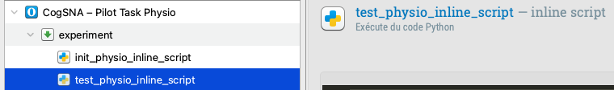
- Code
# Tester le contrôle Biopac avec F9 (envoyé automatiquement par OpenSesame) success = send_triggers("F9") # Résultat du test if success: # La touche a été envoyée, il suffit de vérifier qu'un "F9" vient de s'afficher sur les courbes d'AcqKnowledge var.connection_text = "Connexion avec AcqKnowledge (Biopac) réussie ! \n \n Le marqueur 9 a du s'afficher sur AcqKnowledge. Appuyer sur Entrée pour continuer." else: # L'envoi de la touche a échoué (voir le texte ci-dessous pour réparer) var.connection_text = "Le test de connexion a échoué. \n \n Vérifiez les branchements et que l’adresse IP saisie dans init_physio_inline_script \n et celle de l'ordinateur expérimentateurice soient identiques. \n \n \n Pressez sur espace puis Q pour quitter et réparer."
- Drag & Drop
- On ajoute juste après un
sketchpadpermettant d’afficher le résultat du test de connexion.- Drag & Drop
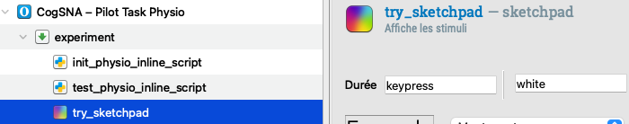
- Texte
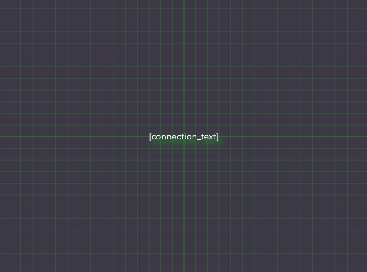
- Drag & Drop
- Il ne reste plus qu’à ajouter des
inline_scriptà chaque fois qu’on désire utiliser un trigger en précisant la touche souhaitée.- Code
# Pression de la touche F1 send_triggers("F1")
- Code
B) Installation Biopac (mesures physiologiques)
1. Informations
- Proposer d’aller aux toilettes avant de commencer vu la durée et les périodes d’acquisition qui doivent être réalisées dans la plus grande détente possible.
- Se désinfecter les mains au gel hydroalcoolique.
- Demander si la personne est allergique à la solution nettoyante (NuPrep, alcoo, etc.) qui sera utilisée pour nettoyer les zones.
2. Placement des électrodes
Électrodes cardiaques (ECG1 et ECG2)
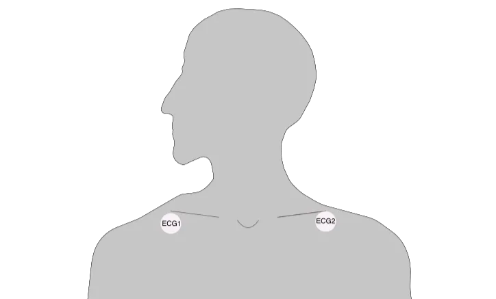
Je vais commencer par placer une électrode sous chaque clavicule.
ECG1
- Après avoir montré la zone et désinfectée à la solution nettoyante, placer une électrode ronde (”Biopac” en bleu) dans le creux de la clavicule.
ECG2
- Répéter sous l’autre clavicule, du côté du coeur.
Électrodes d’impédance (ICG1, ICG2, ICG3, et ICG4)
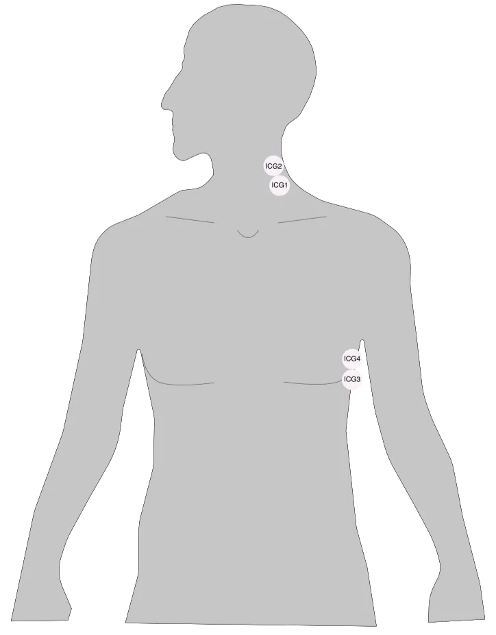
Je vais placer 2 électrodes dans votre cou, puis 2 sur le côté du torse.
ICG1
- Après avoir montré la zone et désinfectée à la solution nettoyante, placer une électrode ronde (”Biopac” en bleu) en-dessous du creux sur le côté du cou (fosse supraclaviculaire) en haussant les épaules.
ICG2
- Après avoir montré la zone et désinfectée à la solution nettoyante placer une électrode ronde (”Biopac” en bleu) juste au dessus de l’autre (les deux doivent se toucher), elle devrait se trouver en-dessous de la mâchoire.
Je vais maintenant placer 2 électrodes sur le côté du torse.
ICG3
Je vais placer celle-ci sous votre bras (du même côté).
- Après avoir montré la zone et désinfectée à la solution nettoyante, placer une électrode ronde (”Biopac” en bleu) sur le côté du torse, sous le bras, à la même hauteur que le plexus solaire (centré sous la poitrine, fin du sternum, avant de ne plus sentir d’os), en alignement vertical avec celles posées sur le cou.
ICG4
Je vais placer celle-ci juste au dessus de la précédente.
- Après avoir montré la zone et désinfectée à la solution nettoyante, placer une électrode ronde (”Biopac” en bleu) juste au dessus de l’autre (les deux doivent se toucher). Les 4 électrodes de l’ICG sont donc toutes alignées verticalement, sur le côté du corps.
Électrodes de conductance (EDA1, EDA2)
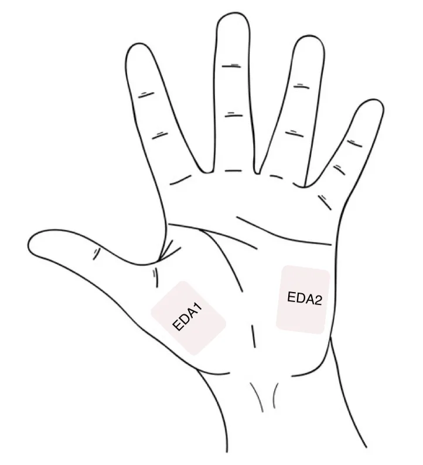
Je vais placer les 2 électrodes sur la paume de votre main non-dominante. Vous êtes droitier·e ?
EDA1
Je vais commencer par en placer une juste avant le pouce.
- Après avoir montré la zone et désinfectée à la solution nettoyante, prendre une électrode rectangulaire, verser une petite noix de gel sur le centre de l’électrode en étalant (avec le goulot du flacon) sur la zone verte.
- Placer l’électrode le long de la main avant le pouce.
EDA2
- Répéter sur la zone le long de la main avant l’auriculaire.
3. Branchement des pinces électrodes
- Pour éviter l’usure et la casse, les électrodes seront déjà branchées au(x) longs câble(s) permettant de les connecter à l’appareil. Les électrodes peuvent alors être repérées grâce au code couleur de ces câbles :
- Câble avec marqueur rouge noté “ECG” : 3 électrodes pour l’ECG (dont l’une ne sera pas utilisée).
- Câble avec marqueur jaune noté “ICG1” qui rejoint le câble avec marqueur vert noté “ICG2” : 4 électrodes pour l’ICG.
- Câble avec marqueur bleu noté “EDA” : 2 électrodes pour l’EDA.
- Les fils doivent passer sous les vêtements et les clips servent à accrocher les câbles au col du t-shirt (emplacement à déterminer avec la·e participant·e selon son confort).
Électrodes cardiaques (ECG1 et ECG2)
- Seules 2 électrodes (blanche et rouge) sont utilisées, puisque le repère de masse utilisé est celui de l’ICG.
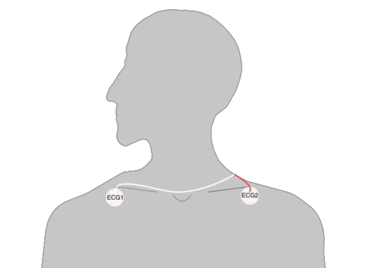
Je vais maintenant brancher les pinces électrodes sur votre torse.
- Utiliser le triple branchement : blanc, rouge, noir.
ECG1
Pouvez-vous tirer votre haut ? Je peux brancher ?
- Clipper la pince du fil rouge du côté opposé au coeur avec la partie métallique de la pince sur le patch de l’électrode.
Tout va bien ?
- Attendre la réponse puis passer à la suite.
ECG2
- Répéter sous l’autre clavicule, avec la pince du fil rouge.
- La pince du fil noir n’a pas besoin d’être branché, il ne doit juste pas toucher de partie métallique (autre électrode, bijoux, etc.).
Électrodes d’impédance (ICG1, ICG2, ICG3, et ICG4)
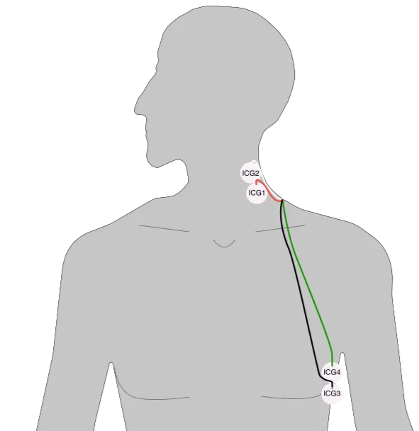
- Utiliser le quadruple branchement : blanc, rouge, vert, noir.
Je vais placer les autres électrodes sur votre torse.
ICG1
Je peux brancher dans votre cou ?
- Clipper la pince du fil blanc avec la partie métallique de la pince sur le patch de l’électrode du haut du cou.
Tout va bien ?
- Attendre la réponse puis passer à la suite.
ICG2
- Clipper la pince du fil blanc avec la partie métallique de la pince sur le patch de l’électrode du haut du cou.
ICG3
Pouvez-vous soulever votre haut ? Je peux brancher sur le côté du torse ?
- Clipper la pince du fil noir avec la partie métallique de la pince sur le patch de l’électrode du bas.
Tout va bien ?
- Attendre la réponse puis passer à la suite.
ICG4
- Clipper la pince du fil vert avec la partie métallique de la pince sur le patch de l’électrode au-dessus.
Électrodes de conductance (EDA1, EDA2)
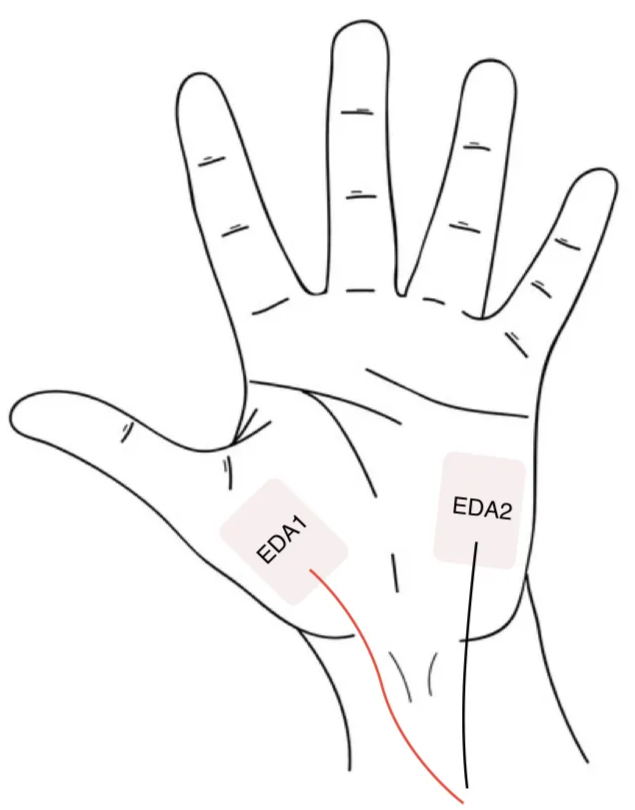
- Utiliser le double branchement : rouge, noir.
Je peux brancher sur votre main ?
- Clipper le cable rouge sur l’électrode proche du pouce avec la partie métallique de la pince sur le patch de l’électrode.
Tout va bien ?
- Attendre la réponse puis faire de même avec l’autre électrode.
- Utiliser, si besoin, du sparadrap pour fixer les fils sur le bras, en demandant en amont s’il n’y a pas d’allergie.
4. Lancement du logiciel
Vous pouvez vous détendre le temps que j’installe les ordinateurs.
Biopac MP200
- Pour éviter l’usure et la casse, les électrodes seront déjà branchées au(x) long(s) câble(s) permettant de les connecter à l’appareil. Si ce n’est pas le cas, il suffit de brancher les 4 câbles en suivant le code couleur.
- Il s’agit de câbles similaires à ceux utilisés pour les branchements ethernet. Ils possèdent donc une languette en plastique souple “l’ergot” qui permet de verrouiller le câble.
- Repérer l’ergot et orienter le câble de façon à ce que l’ergot soit sur la droite.
- Rentrer le câble dans le port et attendre le clic.
- NB : le câble ICG se divise en 2 branchements “ICG1” et “ICG2”.
- Allumer l’appareil :
- Presser le bouton au dos de la machine.
- Le
statutdevrait s’allumer.
- Le petit écran va afficher les informations du boîtier et lancer la connexion avec l’ordinateur qui peut prendre quelques minutes.
Ordinateur expérimentateur
Gestion des triggers : keyboard_trigger_server.py
- Lancer le fichier
keyboard_trigger_server.pyen cliquant dessus.
- Le placer sur une moitié de l’écran.
- Il permet de lancer les triggers automatiquement.
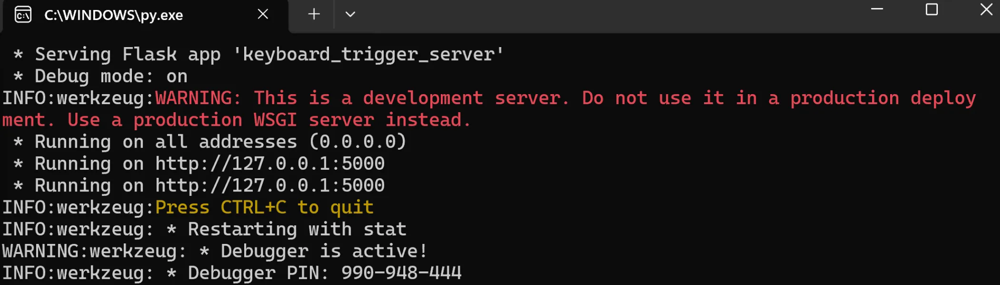
- À partir de là, il n’y aura plus rien à faire à par suivre qu’à chaque phase d’intérêt (définie sur
OpenSesame), de nouvelles lignes s’affichent indiquant la touche pressée automatiquement parOpenSesame.
- Au lancement de l’expérience sur
OpenSesame, une ligne de test se lance automatiquement en indiquant que la toucheF9a été pressée. Un marqueurF9devrait s’afficher au même moment au dessus des courbes surAcqKnowledge.
- Pendant l’expérience, ces marqueurs vont s’afficher automatiquement. Ainsi, lors du lancement du premier trigger, si celui-ci est défini par
F1, la toucheF1sera automatiquement pressée, et ces lignes s’ajouteront aux précédentes (avec la date et heure correspondantes). De même, un marqueur s’affichera surAcqKnowledge.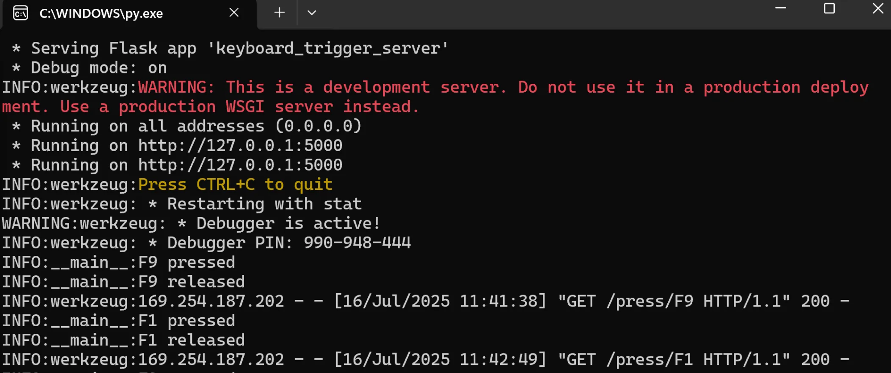
- À la fin de l’experience, voici à quoi il devrait ressembler (avec la date et heure correspondantes) selon, bien sûr le nombre et la valeur des triggers utilisées (ici,
F1àF8, une fois chacune) :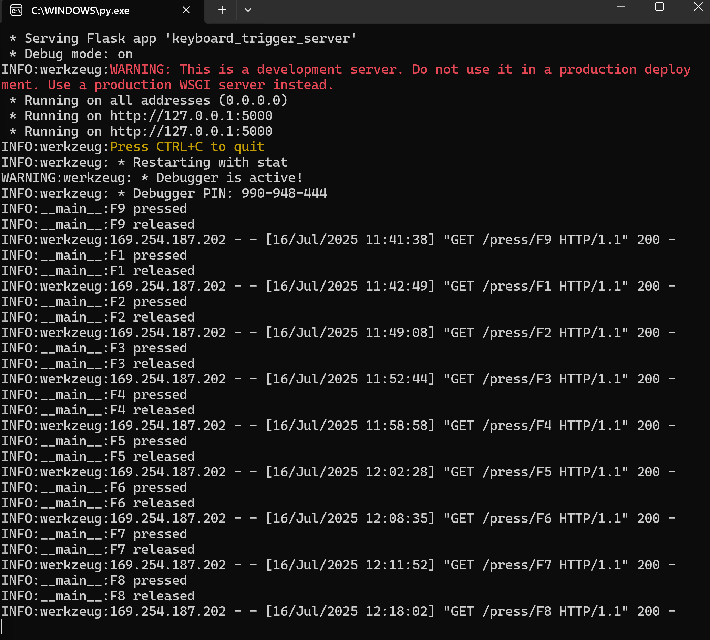
- Si le test
F9ne fonctionne pas, il suffira de se référer à la liste ci-dessus et d’appuyer soit-même sur les touches pour noter les marqueurs surAcqKnowledge.
Enregistrement des données : AcqKnowledge
- Lancer le logiciel
AcqKnowledge:- Choisir le modèle adapté / personnalisé (préférable pour faciliter les acquisitions et analyses).
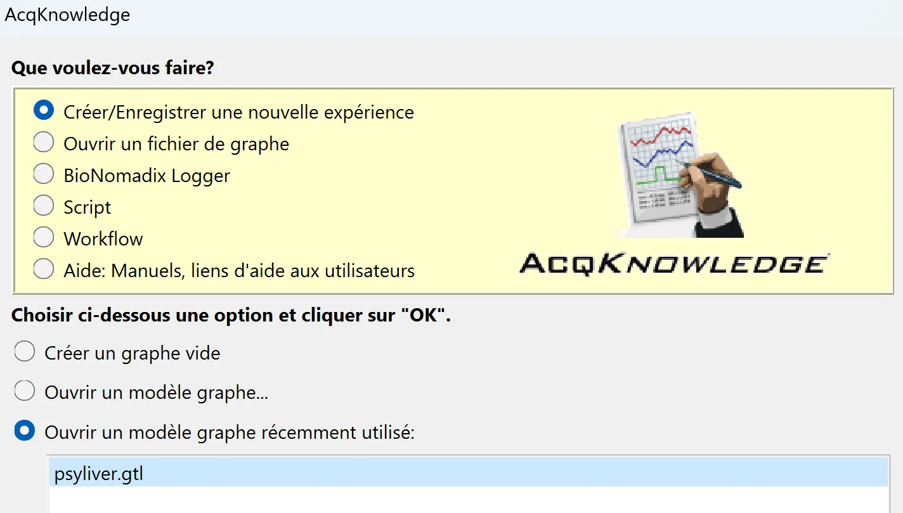
- Cliquer sur
OK.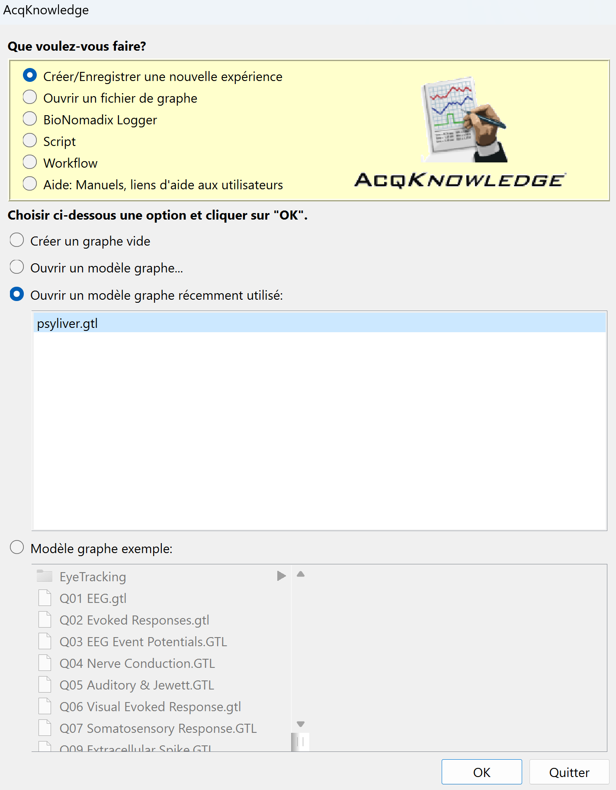
- Choisir le modèle adapté / personnalisé (préférable pour faciliter les acquisitions et analyses).
- Le placer sur l’autre moitié d’écran.
- Lancer l’enregistrement :
- S’assurer qu’au moins 5 à 10 minutes se sont écoulées depuis l’utilisation de la solution nettoyante NuPrep avant de lancer l’enregistrement.
- Cliquer sur
Démarrer.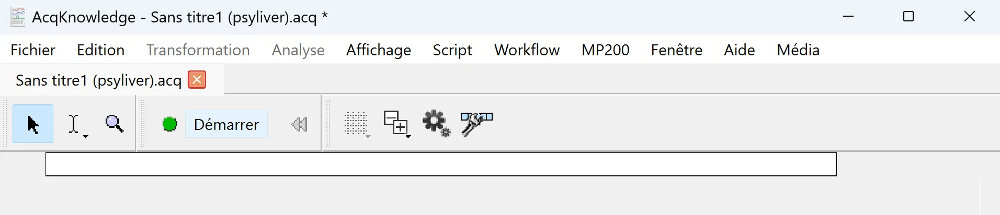
- Cela va ouvrir une fenêtre pop-up pour créer et nommer le fichier avec l’extension
.acqpermettant d’enregistrer les données physiologiques. C’est ce fichier qui contiendra toutes les mesures effectuées par Biopac. Il faut donc le nommer correctement et l’enregistrer au bon endroit.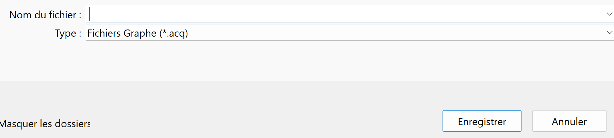
- Vérifier les données :
- Les courbes devraient ressembler à :
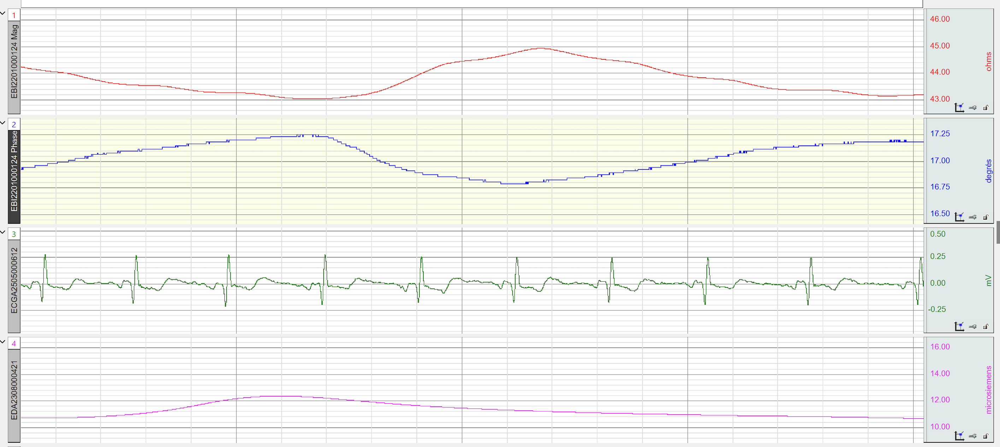
- Les courbes 1 et 2 (dont les noms commencent par EBI) :
- Correspondent à l’ICG.
- Devraient évoluer ensemble en miroir avec un léger décalage.
- Les valeurs peuvent légèrement varier d’un·e participant·e à l’autre mais rester dans cet ordre de grandeur (25 à 45 ohms pour la première, environ 20 degrés pour la deuxième).
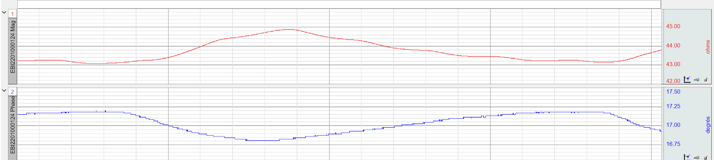
- La courbe 3 (dont le nom commence par ECG) :
- Correspond à l’ECG.
- Devrait représenter le même pattern qui se répète constamment.
- Les valeurs devraient être très similaires d’un·e participant·e à l’autre.
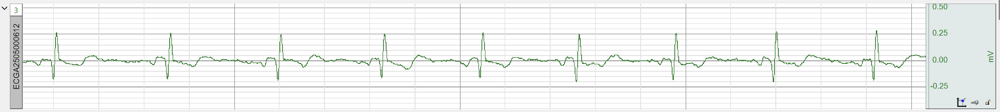
- La courbe 4 (dont le nom commence par EDA) :
- Correspond à l’EDA.
- Devrait être assez lisse, positive, en général entre 3 et 20, mais varie d’un·e participant·e à l’autre. Elle peut facilement monter et descendre selon les stimuli.
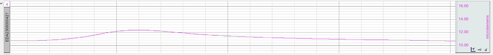
- Devrait descendre pendant les phases de repos.
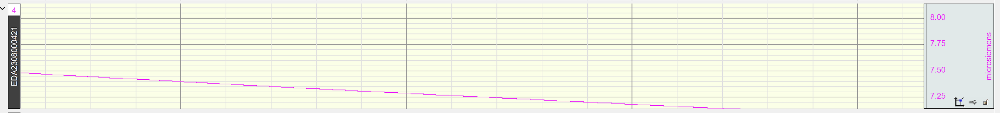
- Test à réaliser :
- Demander à la·e participant·e de fermer les yeux et se détendre.
- Attendre de voir la courbe descendre.
- Claquer des mains et voir si la courbe grimpe soudainement.
- Si le signal est de mauvaise qualité (faible, différent de ce qui est attendu) :
- Vérifier que les patchs d’électrode sont bien collés (notamment lorsqu’ils sont collés sur la main, sur des poils, ou qu’il fait chaud).
- Ne pas hésiter à bien appuyer dessus, à utiliser du sparadrap, voire à changer de patchs d’électrodes.
- Vérifier que les pinces des électrodes sont bien fixées et dans le bon sens (partie métallique sur le patch électrode).
- Vérifier que les électrodes ne sont en contact avec aucun élément métallique : bijou, armature de sous-vêtement, autre électrode, etc.
- Vérifier les branchements entre les gros câbles et les fils colorés, et entre les câbles et le boîtier.
- Vérifier que les patchs d’électrode sont bien collés (notamment lorsqu’ils sont collés sur la main, sur des poils, ou qu’il fait chaud).
- Les courbes devraient ressembler à :
C) Lancement OpenSesame (mesures comportementales)
Ordinateur participant·e
Test des triggers
- Lancer l’expérience.. En parallèle, sur l’autre ordinateur, le test
F9devrait se lancer.- Si le test a fonctionné :
- L’application
keyboard_trigger_server.pydevrait indiquer que la touche a été pressée.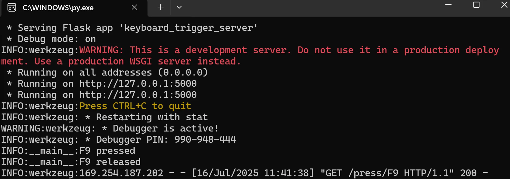
- Sur
AcqKnowledgeun marqueur “F9” devrait s’afficher au dessus des courbes.
- Sur
OpenSesameun écran indiquant la réussite de la connexion devrait s’afficher.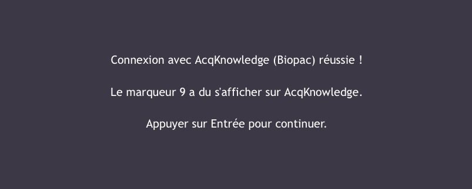
- L’application
- Si le test a échoué :
- Rien ne s’affiche sur l’application
keyboard_trigger_server.py.
- Aucun marqueur ne s’affiche sur
AcqKnowledge.
- Cet écran s’affiche sur
OpenSesame.
- Rien ne s’affiche sur l’application
- Si le test a fonctionné :
D) Terminer l’expérience
Ordinateur participant·e
- L’expérience se termine sur page indiquant sa fin et remerciant la personne volontaire de sa participation. Il suffit d’appuyer sur
Entréepour quitter l’expérience.
Ordinateur expérimentateur
- Lorsque l’expérience est terminée, il suffit d’appuyer sur stop sur
AcqKnowledgepuiscontrôle + S(ouFichier>Enregistrer) pour enregistrer le fichier final avant de quitter le logiciel.
Électrodes
- Retirer délicatement les pinces.
- Retirer délicatement les pinces et fils pour les poser sur la table.
- Selon la réponse, les retirer délicatement ou indiquer les endroits et vérifier que les 8 électrodes ont été retirées.
- Dans tous les cas, proposer / utiliser une lingette pour nettoyer le gel qui reste, notamment sur les mains.
Biopac MP200
- Il suffit de presser le bouton au dos de la machine pour l’éteindre. Le petit écran va s’éteindre et le statut ne devrait plus clignoter.
- Laisser l’appareil branché (pour éviter les messages concernant la pile).
- Pour débrancher les câbles :
- Appuyer doucement sur l’ergot pour le libérer.
- Tirer le connecteur droit vers l’arrière, sans forcer ni tordre.